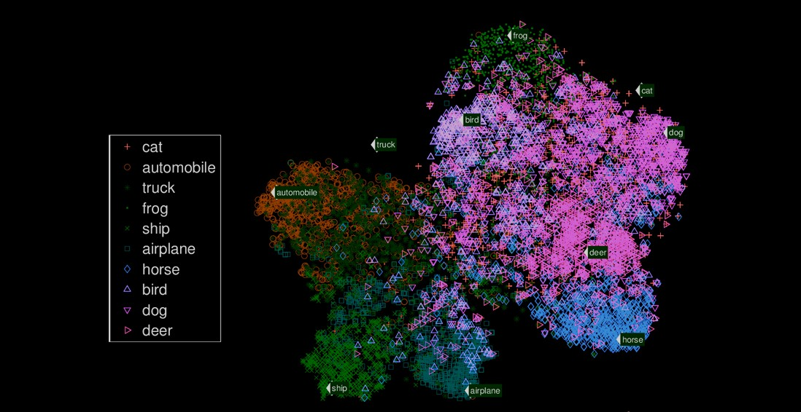
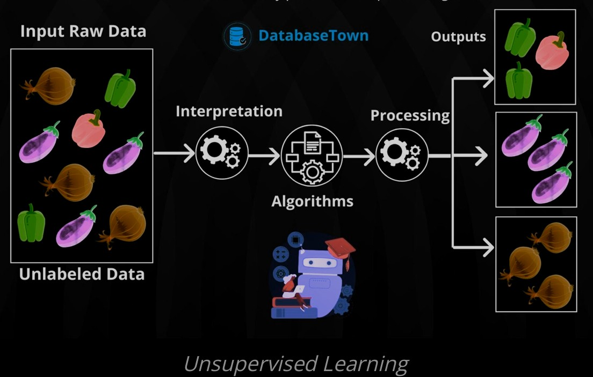
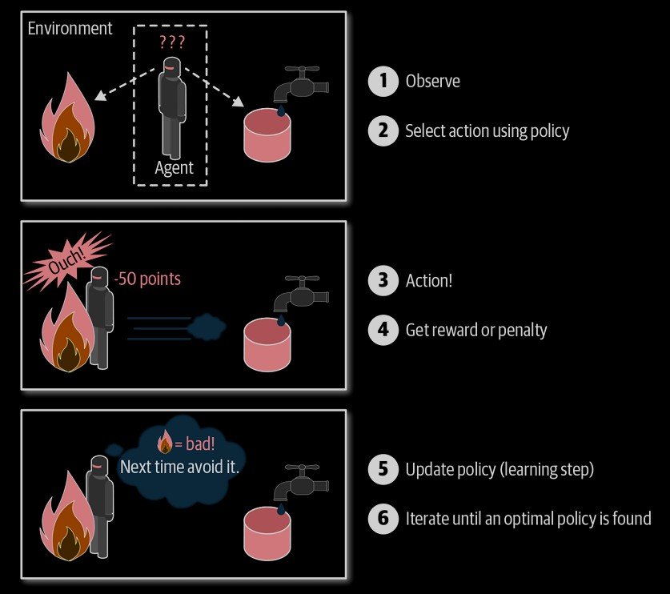

Machine Learning is the silent architect of a new intelligence, where patterns emerge from chaos and predictions arise from data’s depths. It is not merely a tool but a mirror to human curiosity, reflecting our quest to teach machines what we ourselves struggle to define: understanding. Rooted in mathematics and fueled by computation, it bridges the tangible and the abstract, reshaping reality one algorithm at a time.
Supervised Learning
Supervised learning algorithms train on labeled datasets to predict outcomes. Examples include linear regression, logistic regression, and decision trees.

Unsupervised Learning
Unsupervised learning finds hidden patterns from unlabeled data. Techniques include PCA, clustering, and autoencoders.

Reinforcement Learning
Reinforcement learning trains systems through rewards and penalties. Popular methods include Q-learning, DQN, and policy gradients.
